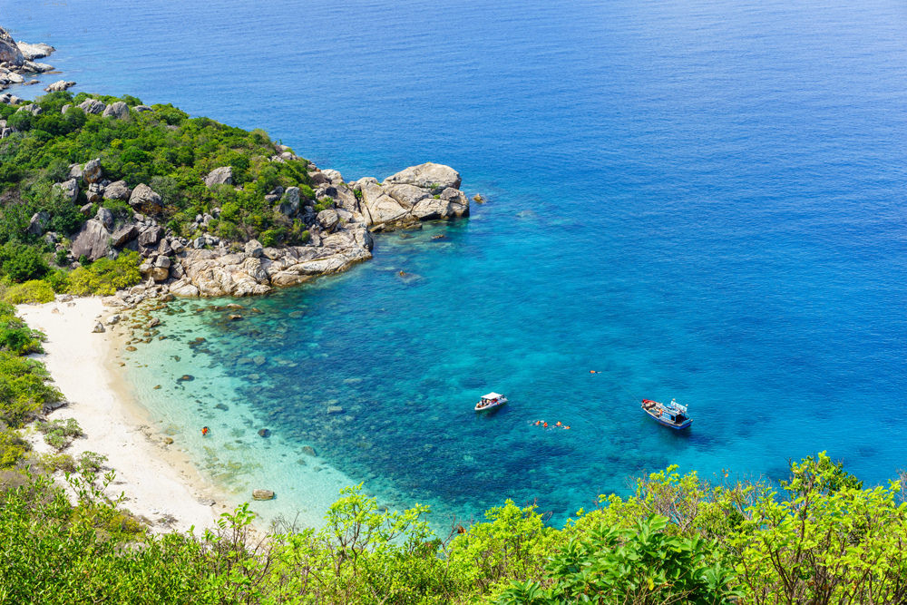
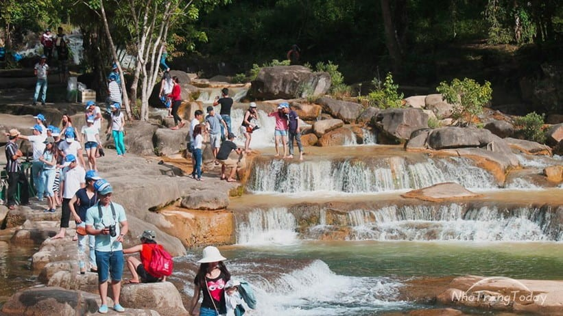

Tour du lịch Nha Trang: Bình Lập – Bình Ba
ĐÊM 1: TP.HCM – VỊNH CAM RANH
21h00: Xe và HDV đón khách tại điểm hẹn. Đoàn khởi hành đi đảo Bình Ba, trên xe quý khách sẽ được giao lưu làm quen cùng với HDV thông qua những trò chơi vui nhộn có thưởng. Những clip hài, hay những tình khúc bất hủ sẽ giúp quý khách xóa tan sự căng thẳng trong công việc hằng ngày. Nghỉ đêm trên xe.
NGÀY 2: RESORT NGỌC SƯƠNG – ĐẢO BÌNH BA (Ăn 03 bữa)
Buổi sáng: Quý khách dừng chân ăn sáng ở nhà hàng tại Cam Ranh.
07h30: Quý khách tiếp tục hành trình, xe đưa quý khách qua cung đường ven biển mới và tuyệt đẹp cùng ngắm khu bảo tồn thiên nhiên Núi Chúa. Trên đường đi quý khách như được chiêm ngưỡng một bức tranh thiên nhiên ban tặng với một bên là núi non hùng vĩ một bên biển xanh trong vắt. Đến Resort Ngọc Sương Bình Lập – bãi biển được ví như là Maldives thu nhỏ của Việt Nam, là nơi được chọn cảnh quay cho nhiều bộ phim nổi tiếng: Những Nụ Hôn Rực Rỡ, Mỹ Nhân Kế…Quý khách tham quan, tắm biển, thỏa thích chụp ảnh với cảnh đẹp tuyệt với tại đây.
09h00: Khởi hành đến cảng Ba Ngòi, đoàn lên tàu di chuyển ra Đảo Bình Ba. Trên thời gian tàu di chuyển ra đảo Đoàn sẽ được chiêm ngưỡng vẻ đẹp thiên nhiên hoang sơ với biển xanh dập dờn, những bè nuôi tôm hùm nằm rải rác trên biển.